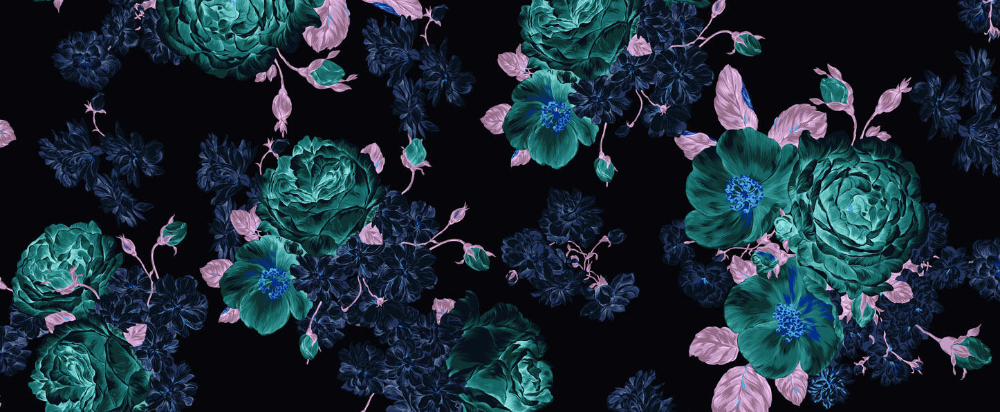
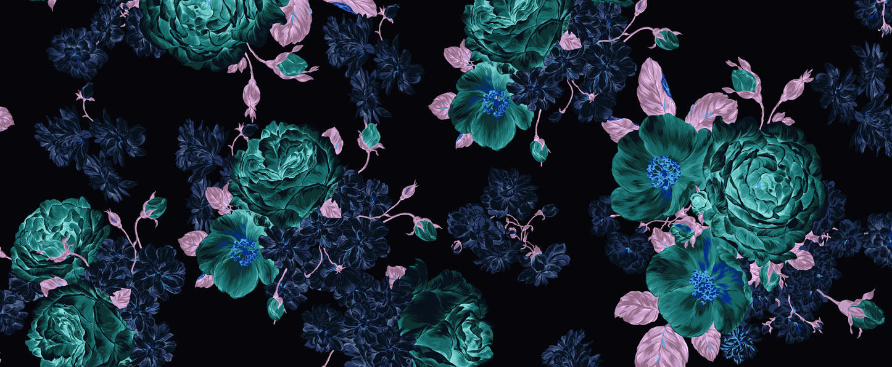

Portfolio
Graphic Design - Illustration - Photography
(Portfolio Images)

About Me
Quick start to about...think of something to put here.
With a Bachelor of Design (Visual Communications), I entered the design world as a Junior Graphic Designer in 2012 and have since developed my skills and understanding of design through my experience of contract and freelance work. My experience thus far has given me the ability to understand a clients needs as well as working to tight deadlines across multiple projects.
The main focus of my work has been Branding and Print Design, mainly developing identities for local businesses and events, from concept to final art. I have a strong passion for simple but great design, which I realise within my works through a blend of both hand drawn and digital design elements.
I have a strong passion for Photography and Illustration, which I try to incorporate within my works whenever possible. I also have a strong knowledge of the Adobe Creative Suite, in particular Photoshop, InDesign and Illustrator.
I am constantly being inspired by the world around me and try to feature my passions into my work.
My Graphic Design Skills include:
- Branding
- Print Design
- Digital Design
- Web Design/HTML
- Illustration
- Photography

CV PDF download
Contact me:
Email
Graphic Design - Illustration - Photography
(Portfolio Images)About Me
Quick start to about...think of something to put here.
With a Bachelor of Design (Visual Communications), I entered the design world as a Junior Graphic Designer in 2012 and have since developed my skills and understanding of design through my experience of contract and freelance work. My experience thus far has given me the ability to understand a clients needs as well as working to tight deadlines across multiple projects.
The main focus of my work has been Branding and Print Design, mainly developing identities for local businesses and events, from concept to final art. I have a strong passion for simple but great design, which I realise within my works through a blend of both hand drawn and digital design elements.
I have a strong passion for Photography and Illustration, which I try to incorporate within my works whenever possible. I also have a strong knowledge of the Adobe Creative Suite, in particular Photoshop, InDesign and Illustrator.
I am constantly being inspired by the world around me and try to feature my passions into my work.
My Graphic Design Skills include:
- Branding
- Print Design
- Digital Design
- Web Design/HTML
- Illustration
- Photography
 CV PDF download